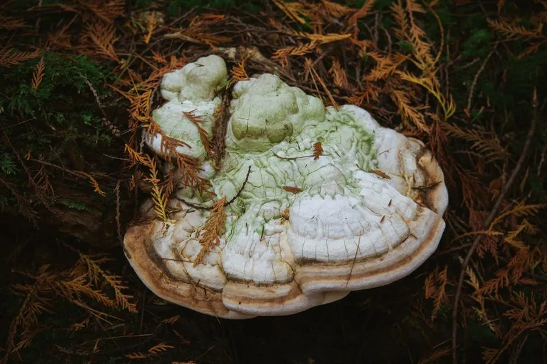

真菌 · 真菌界
苦白蹄 Fomitopsis officinalis

拟层孔菌科拟层孔菌属多年生木腐菌，菌盖马蹄形、表面龟裂，味极苦，专生于落叶松枯木，是传统药用真菌，不可食用。
- 分类
- 门担子菌门纲伞菌纲目多孔菌目科拟层孔菌科属拟层孔菌属
- 栖息环境
- 北半球寒温带针叶林，专生于落叶松属枯木，引起褐色腐朽
- 地理分布
- 北半球寒温带，中国东北、西北及欧洲、北美针叶林有分布
- 保护级别
- IUCN 暂无评估；专一寄主、森林减少使其野生资源受关注
物种志
苦白蹄的子实体多年生，木质至粉笔质，菌盖马蹄形至圆柱形，高可达 30 厘米，表面白色至淡黄白色，老熟后龟裂，边缘钝。菌肉白色、粉笔质，味极苦；菌管多层，孔口圆形，白色至淡黄色。孢子印白色，孢子椭圆形，光滑无色。
本种分布于北半球寒温带针叶林，专生于落叶松属枯木上，引起木材褐色腐朽。它的菌肉味极苦，因此得名“苦白蹄”。在欧洲，本种被称为 Agarikon，是历史悠久的药用真菌，民间用于消炎、止咳与伤口处理；现代研究关注其抗炎与免疫调节成分。苦白蹄木质或粉笔质，不可食用，也不可自行入药。由于专一寄主与森林减少，其野生资源需要关注。
形态与习性
- 菌盖马蹄形至圆柱形，高可达 30 厘米
- 菌肉白色、粉笔质，味极苦
- 菌管多层，孔口白色至淡黄色
- 孢子印白色，孢子椭圆形
- 生境落叶松枯木，引起褐色腐朽
- 药用传统药用真菌，不可自行入药
趣味知识
- 苦白蹄的菌肉味极苦，因此得名，连动物都不愿啃食。
- 它专一生长在落叶松枯木上，是落叶松林特有的木腐菌。
- 在欧洲，它被称为 Agarikon，有数百年的药用记载。
- 它的菌肉呈粉笔质，老熟后表面会龟裂成块状。